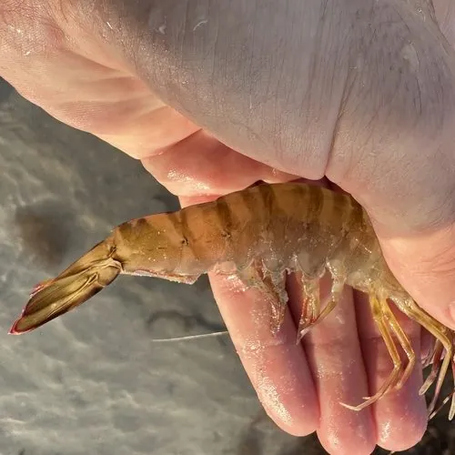

甲壳动物 · 动物界
短沟对虾 Penaeus semisulcatus

体表有深浅相间横纹、额角侧缘具深沟的中型对虾，栖息印度洋至西太平洋浅海，是重要经济虾类。
- 分类
- 门节肢动物门纲软甲纲目十足目科对虾科属对虾属
- 栖息环境
- 泥沙底质浅海、沿岸浅水与河口附近
- 地理分布
- 印度洋至西太平洋，自东非、红海至中国南海、澳大利亚北部
- 保护级别
- 重要经济虾类，野生资源受拖网捕捞压力
物种志
短沟对虾的雌虾体长约十八至二十三厘米，体色灰绿至黄褐，腹部有明显的深浅相间横纹，尾扇带蓝黄边，因此英文名被称为绿虎虾。额角上缘有齿，侧缘有一条深深的纵沟，短沟之名由此而来。第一触角鞭较长，步足细长，第五对步足没有外肢，这是对虾属的鉴别特征之一。
它分布于印度洋至西太平洋的热带与亚热带海域，从东非、红海到印度、中国南海和澳大利亚北部，栖息在泥沙底质的浅海。成虾在较深水域产卵，幼虾在沿岸浅水育肥。它是夜行性捕食者，取食小型甲壳类、多毛类和有机碎屑。由于肉质紧实，它是印度洋沿岸重要的捕捞虾种，拖网捕捞强度较大，养殖也在逐步发展。
形态与习性
- 体长雌虾约十八至二十三厘米
- 体色灰绿至黄褐，腹部深浅横纹相间
- 额角上缘具齿，侧缘有深纵沟
- 食性小型甲壳类、多毛类与有机碎屑
- 活动夜行性，白天埋栖于泥沙
- 经济印度洋沿岸重要捕捞虾种
趣味知识
- 它腹部一圈深一圈浅的横纹，像老虎的花纹，所以被叫作绿虎虾。
- 额角侧面那道深沟是它的标志，短沟对虾的名字正来自这里。
- 白天它把身体埋进沙里只露出触角，夜里才出来觅食。